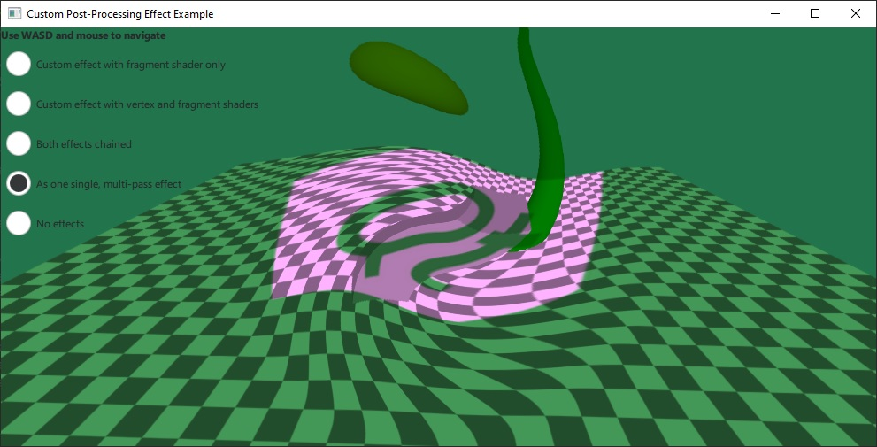

Qt Quick 3D - Custom Effect Example
Demonstrates writing custom post-processing effects.

The example implements its own custom post-processing effects, which are then applied on the scene via SceneEnvironment::effects. It demonstrates both the simplest type of effects that only have a fragment shader, and also the more advanced case with both a vertex and fragment shader present, with data passed between the two.
The simple effect is using only a single fragment shader, and adding a texture input from an image file:
Effect { id: eff1 property TextureInput tex: TextureInput { id: qtLogo texture: Texture { source: "qt_logo_rect.png" } } passes: Pass { shaders: Shader { id: fs1 stage: Shader.Fragment shader: "effect.frag" } } }
This effect uses a very simple fragment shader, just taking the input texture containing the scene, and multiplying it with the image texture:
void MAIN()
{
vec4 c = texture(tex, TEXTURE_UV);
FRAGCOLOR = c * texture(INPUT, INPUT_UV);
}
The shader snippets in the .vert and .frag files are written using the built-in keywords as described in the Effect documentation. Custom properties with basic types, as well as properties with the TextureInput type are automatically exposed to the shaders as uniforms and samplers.
The second effect is more complex. It specifies both a vertex and a fragment shader, as well as two properties: uRed and uGreen, with an animation on uRed:
Effect { id: eff2 property real uRed: 0.0 SequentialAnimation { running: radioEff2.checked || radioEff3.checked loops: Animation.Infinite NumberAnimation { target: eff2; property: "uRed"; from: 0; to: 1; duration: 2000 } NumberAnimation { target: eff2; property: "uRed"; from: 1; to: 0; duration: 2000 } } property real uGreen: 1.0 Shader { id: vs2 stage: Shader.Vertex shader: "effect2.vert" } Shader { id: fs2 stage: Shader.Fragment shader: "effect2.frag" } passes: Pass { shaders: [ vs2, fs2 ] } }
The fragment shader for this effect creates a distortion by modifying the sampling coordinates. The calculation uses center_vec, which comes from the fragment shader. Finally, the shader adjusts the color using the uRed and uGreen uniforms. Note that these uniforms do not have to be declared in the shader:
VARYING vec2 center_vec;
void MAIN()
{
float radius = 0.25;
float dist_to_center = length(center_vec) / radius;
vec2 texcoord = INPUT_UV;
if (dist_to_center <= 1.0) {
float rotation_amount = (1.0 - dist_to_center) * (1.0 - dist_to_center);
float r = radians(360.0) * rotation_amount / 4.0;
float cos_r = cos(r);
float sin_r = sin(r);
mat2 rotation = mat2(cos_r, sin_r, -sin_r, cos_r);
texcoord = vec2(0.5, 0.5) + rotation * (INPUT_UV - vec2(0.5, 0.5));
}
vec4 c = texture(INPUT, texcoord);
c.r *= uRed;
c.g *= uGreen;
FRAGCOLOR = c;
}
Files:
- customeffect/CMakeLists.txt
- customeffect/Example/customeffect_qml_module_dir_map.qrc
- customeffect/Example/effect.frag
- customeffect/Example/effect2.frag
- customeffect/Example/effect2.vert
- customeffect/Example/main.qml
- customeffect/Example/qmldir
- customeffect/customeffect.pro
- customeffect/effect.frag
- customeffect/effect2.frag
- customeffect/effect2.vert
- customeffect/main.cpp
- customeffect/main.qml
- customeffect/qml.qrc
Images:
{kind=link}
{kind=link}
{kind=link}
{kind=link}